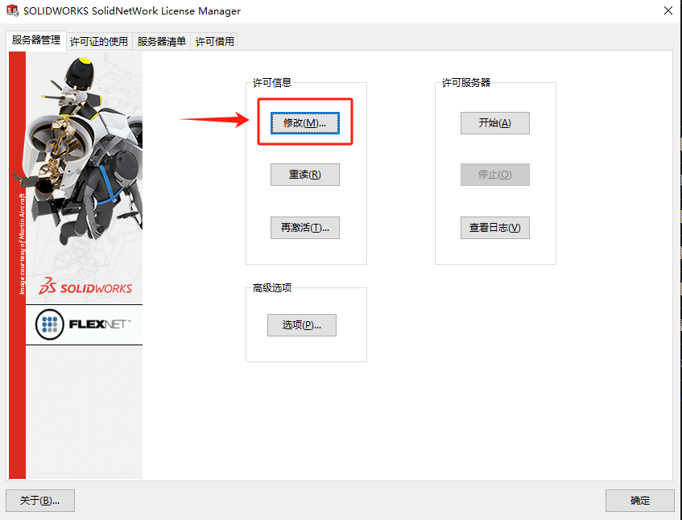
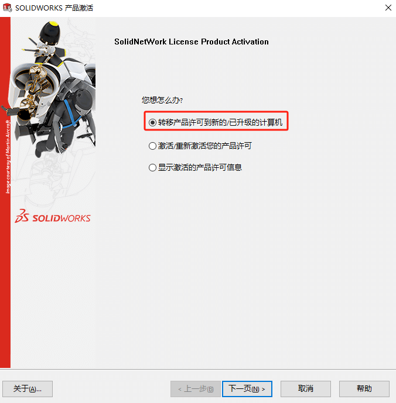
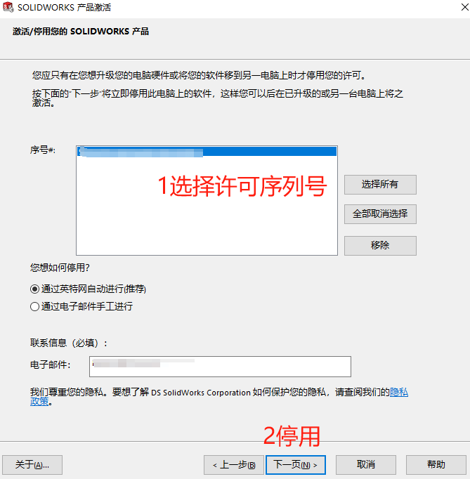
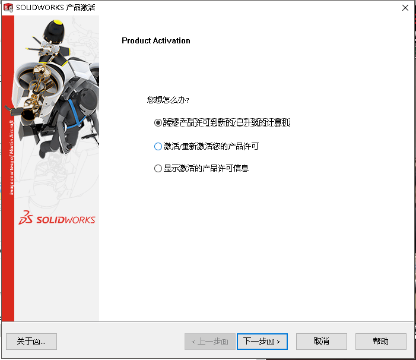
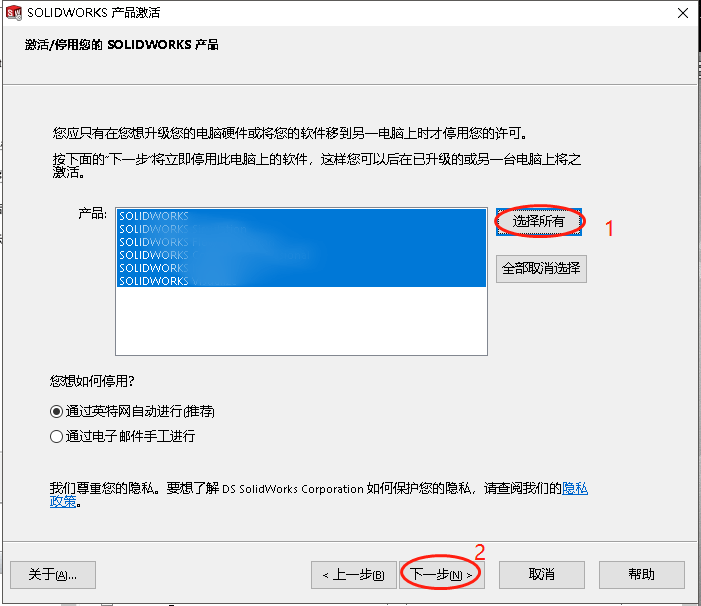

许可修改
网络版增加许可
1、找到许可服务器上的安装包，并启动 SolidWorks 许可管理器安装程序 。
1 | 安装包位置参考：X:\SOLIDWORKS安装包\SOLIDWORKS 20xx SP5\swlicmgr |

2、选择“修改”，执行“下一步”。

3、当您看到包含 SolidWorks 网络序列号的界面时，在序列号后输入（英文）逗号分开，然后输入新序列号。

4、执行修改安装

5、完成此操作后，还需打开 SolidNetWork 许可管理器程序并对新许可进行激活操作（#激活许可操作）
6、选择“激活/重新激活您的产品许可”，按提示进行下一步。在设置页默认下一步。
7、此时，可在序列号文本框中看到修改的两个序列号。选择新序列号，继续完成激活过程
网络版许可转移
  单机版许可转移
1、找到SW程序文件目录的“swactwiz.exe”程序，位置：
1 | <SolidWorks程序文件目录>\SOLIDWORKS\setup\i386 |
或找到SW安装包目录的“swactwiz.exe”程序，位置：
1 | <SOLIDWORKS 安装包>\Support\swactwiz |
2、打开“swactwiz.exe”选择“转移产品许可到新的/已升级的计算机”。
3、选择所有许可，选择下一步进行许可停用（转移）。
3、转移完成后，选择在新电脑安装SW时，输入回序列号即可完成在新电脑的激活。